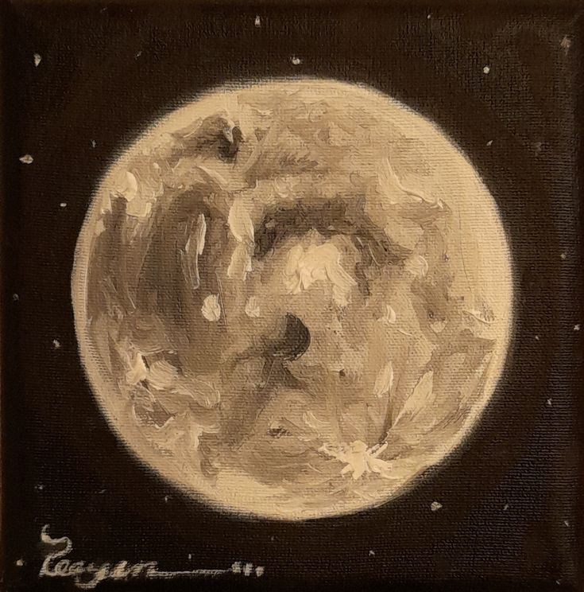

Welcome to Nisa's Website!
Hi! Welcome to my 31268 Web Systems Assignment! Feel free to take a look around!
My name is Nisa Kharrl, I am a first year student at University of Technology Sydney studying Bachelor of Information Technology under the Co-op program. The other subjects I am currently studying are:
- 31265 Communication for IT Professionals
- 40008 Career Management
- 48023 Programming Fundamentals
I have many hobbies and interests that I regularly indulge in during my free time, including:
- Playing Games: I play games such as Roblox, Minecraft, Wuthering Waves and even more brainy games like Wordle!
- Watching TV Shows and Movies: I love anything that keeps me on my toes. The last movie I watched was Zootopia 2 in the cinemas and I'm currently watching Brooklyn 99
- Watching Anime: I just finished Gachiakuta, which was amazing. My favourite anime by far has to be Attack on Titan
- Cooking: Give me a recipe and I can cook anything!
- Meeting up with friends: from watching videos, movies and shows together to playing games and simply chatting about our life and memories.
- Painting: I love painting, whether it be something small, silly or slightly detailed it is a form of therapy for me!
